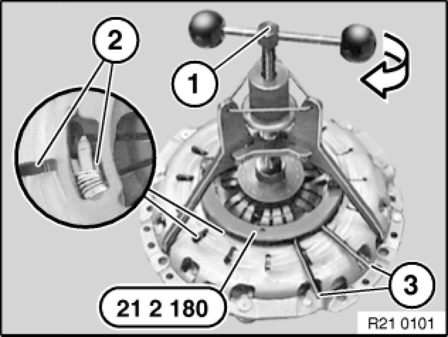

Clutch Disc: Service and Repair
21 21 500 - Removing and installing/replacing clutch (SAC)

Special tools required:
- 11 9 260
- 11 9 263
- 11 9 264
- 11 9 265
- 21 2 141 21 2 140 Clutch Centering Mandrel (2 x)
- 21 2 170 21 2 170 Tensioning Tool
- 21 2 180 21 2 180 Locating Ring
- 21 2 201
- 21 2 230 21 2 230 Clutch Centering Tool
- 21 2 250 21 2 250 Clutch Centering Tool

Necessary preliminary tasks:
Remove transmission Removing and Installing Transmission (GS6-37BZ N52K).

Installation:
Screws must be replaced.
Jointing torque and angle of rotation must be observed without fail.
M54/M57/M57TU/N52/N52K/N53/S54 only:
Block flywheel with special tools 11 9 260 and 11 9 265.
N62 only:
Block flywheel with special tools 11 9 260, 11 9 263 and 11 9 264.
Release screws and remove clutch from flywheel.
Installation:
Clean flywheel and check for wear and damage.
Replace damaged flywheel.
Important!
Always replace clutch plates fouled e.g. by oil, cleaning agent.

Observe the following procedure when installing the removed clutch and clutch plate.
Installation:
Screws must be replaced.
Jointing torque and angle of rotation must be observed without fail.
Insert special tool 21 2 180 21 2 180 Locating Ring in clutch.
Press special tool 21 2 180 21 2 180 Locating Ring together at handles (1) as far as it will go and tighten down knurled screws (2).
Adjustment ring of clutch is now secured in its original position (wear position).
Note:
Locking hooks (1) of special tool 21 2 180 21 2 180 Locating Ring must engage in openings of pressure spring.
Fit special tool 21 2 170 21 2 170 Tensioning Tool and tighten down at knurled screw (1).
Screw in spindle (2) until diaphragm spring (3) is tensioned on stop.
Note:
Insert special tool 21 2 170 21 2 170 Tensioning Tool only in area of bores for dowel pins.
Center clutch plate (1) with special tool in dual-mass flywheel.
Important!
Install clutch plate in correct position.
Note designation for "engine side" / "transmission side".
Handle clutch plate with care. Do not touch surfaces of friction linings.

Fit clutch (1) to flywheel.
Tightening torque 21 21 1AZ [1][2]Clutch Disc, M/T.
Note:
Clutch (1) must be secured by way of dowel pins (2).
Release spindle (1) until load is fully removed from diaphragm spring. Remove special tools 21 2 170 21 2 170 Tensioning Tool and 21 2 180 21 2 180 Locating Ring.
Withdraw special tool from clutch plate with aid of accompanying screw (1).
Installing removed clutch with new clutch plate:
Installation:
Screws must be replaced.
Jointing torque and angle of rotation must be observed without fail.
Important!
Before installing a used clutch with a new clutch plate, always reset adjustment ring in new position.
Set clutch down on a clean surface.
Insert special tool 21 2 180 21 2 180 Locating Ring in clutch (1).
Note:
Locking hooks (1) of special tool 21 2 180 21 2 180 Locating Ring must engage in openings in clutch.
Fit special tool 21 2 170 21 2 170 Tensioning Tool and tighten down at knurled screw (1).
Note:
Insert special tool 21 2 170 21 2 170 Tensioning Tool only in area of bores for dowel pins.

Screw in spindle (1) until adjustment ring of clutch (2) can be turned with special tool 21 2 180 21 2 180 Locating Ring at handles (3).
Press special tool 21 2 180 21 2 180 Locating Ring together at handles (3) as far as it will go and grip firmly.
At same time tighten down knurled screws (2).
Adjustment ring of clutch is now secured in new position.
Screw in spindle (1) until diaphragm spring is tensioned on stop.
Center clutch plate (1) with special tool.
Important!
Install clutch plate in correct position.
Note designation for "engine side" / "transmission side".
Handle clutch plate with care. Do not touch surfaces of friction linings.
Fit clutch (1) to flywheel.
Tightening torque, 21 21 1AZ [1][2]Clutch Disc, M/T.
Important!
Clutch (1) must be secured by way of dowel pins (2).
Release spindle (1) until load is fully removed from diaphragm spring (2)
Remove special tools 21 2 170 21 2 170 Tensioning Tool and 21 2 180 21 2 180 Locating Ring.
Withdraw special tool from clutch plate with aid of accompanying screw (1).
Installing new clutch
Important!
Locking piece may only be removed clutch is screwed down!
Installation:
Screws must be replaced.
Jointing torque and angle of rotation must be observed without fail.
Center clutch plate (1) with special tool.
Important!
Install clutch plate in correct position.
Note designation for "engine side" / "transmission side".
Handle clutch plate with care. Do not touch surfaces of friction linings.

Fit clutch to flywheel.
Tightening torque 21 21 1AZ [1][2]Clutch Disc, M/T.
Important!
Clutch must be secured by way of dowel pins (1).
Carefully unscrew locking piece (1) clockwise or counterclockwise with a 14 mm WAF hexagon socket wrench (2).
Note:
A slight snapping of the plate spring while unscrewing the lock is possible.
Withdraw special tool from clutch plate with aid of accompanying screw (1).